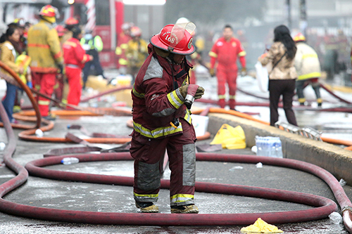

En los últimos días se han tocado muchos temas respecto a los bomberos en los medios de comunicación. Esto es debido a la explosión que hubo en un local de Villa el Salvador donde dos bomberos quedaron heridos con quemaduras de segundo y tercer grado en aproximadamente el treinta por ciento de su cuerpo. Uno de ellos se encuentra en la Unidad de Cuidados Intensivos (UCI) debido a que sus heridas son de extremo cuidado.
Estos hechos sacaron a relucir las malas condiciones en las que trabajan los bomberos voluntarios de nuestro país. El comandante general del Cuerpo General de Bomberos, Andrés Ángeles, informó que hace seis años no se reciben equipos nuevos y que actualmente cuentan con equipos donados de Estados Unidos, Canadá y Japón. Incluso la Compañía de Bomberos Magdalena N°36 se encuentra organizando una rifa con el objetivo de traer un camión cisterna donado desde Estados Unidos.